Contents
MyMainScript
tic;
Q2)
Reading the image
Grass Image
img1 = im2double(imread('grass.png')); mu_n1 = 0; sigma_n1 = 0.05; window_size1 = 3; sigma_s1 = 0.9; % sigma_s1 = 0.9*0.9; % sigma_s1 = 1.1*0.9; sigma_i1 = 0.15; % sigma_i1 = 0.15*0.9; % sigma_i1 = 0.15*1.1; [output1,spatialimg1,noisyimg1,RMSD1] = myBilateralFiltering(img1,mu_n1,sigma_n1,window_size1,sigma_s1,sigma_i1); img1 = im2uint8(img1);
HoneyComb Image
img2 = im2double(imread('honeyCombReal.png')); mu_n2 = 0; sigma_n2 = 0.05; window_size2 = 3; sigma_s2 = 0.81; % sigma_s2 = 0.81*0.9; % sigma_s2 = 0.81*1.1; sigma_i2 = 0.15; % sigma_i2 = 0.15*0.9; % sigma_i2 = 0.15*1.1; [output2,spatialimg2,noisyimg2,RMSD2] = myBilateralFiltering(img2,mu_n2,sigma_n2,window_size2,sigma_s2,sigma_i2); img2 = im2uint8(img2);
Barbara Image
img_struct = load('barbara','imageOrig'); img3 = im2double(mat2gray(img_struct.imageOrig)); mu_n3 = 0; sigma_n3 = 0.05; window_size3 = 5; sigma_s3 = 1.3; % sigma_s3 = 1.3*0.9; % sigma_s3 = 1.3*1.1; sigma_i3 = 0.10935; % sigma_i3 = 0.10935*0.9; % sigma_i3 = 0.10935*1.1; [output3,spatialimg3,noisyimg3,RMSD3] = myBilateralFiltering(img3,mu_n3,sigma_n3,window_size3,sigma_s3,sigma_i3); img3 = im2uint8(img3);
Part d) Optimal Parameters
Grass.png Optimal parameters
- Window size = 3
- 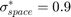
- 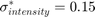 (w.r.t Intensity in [0,1])
- RMSD = 3.0846
honeyCombReal.png Optimal parameters
- Window size = 3
- 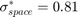
- (w.r.t Intensity in [0,1])
- RMSD = 5.5722
Barbara.png Optimal parameters
- Window size = 5
- 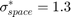
- 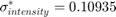 (w.r.t Intensity in [0,1])
- RMSD = 12.4202
Part e)
- , 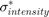
Grass.png --- RMSD = 3.1546
honeyCombReal.png --- RMSD = 5.9913
Barbara.png --- RMSD = 12.5425
- 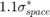,
Grass.png --- RMSD = 3.1428
honeyCombReal.png --- RMSD = 5.5076
Barbara.png --- RMSD = 12.5770
- 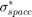, 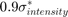
Grass.png --- RMSD = 3.1410
honeyCombReal.png --- RMSD = 5.8442
Barbara.png --- RMSD = 12.5464
- , 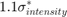
Grass.png --- RMSD = 3.1301
honeyCombReal.png --- RMSD = 5.7014
Barbara.png --- RMSD = 12.5110
Displaying Image
Grass.png
fig1 = figure('Position',[0,0,5000,5000]); subplot(1,3,1),imshow(img1); title('Original Image'); colorbar; subplot(1,3,2),imshow(noisyimg1); title('Noisy Image'); colorbar; subplot(1,3,3),imshow(output1); title('Output Image'); sgtitle('Grass.png'); colorbar;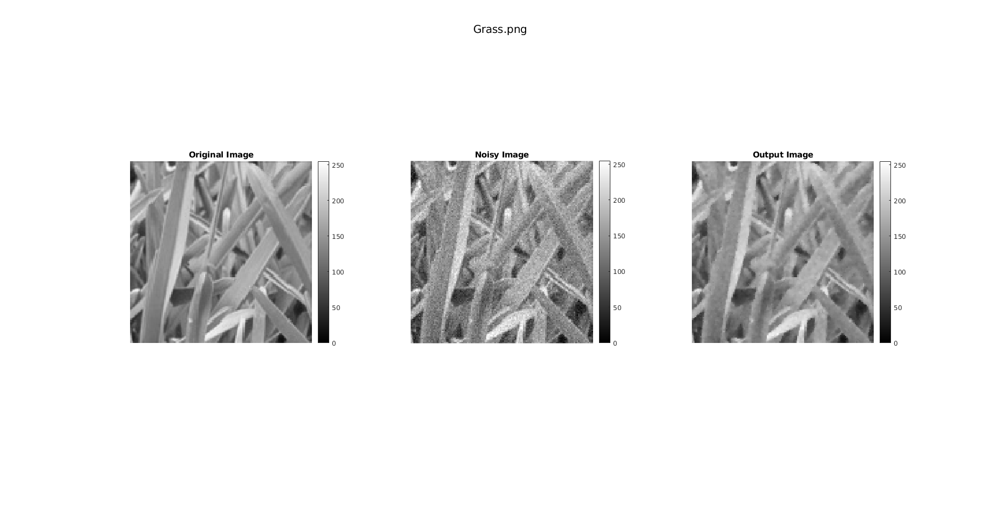
HoneyCombReal.png
fig2 = figure('Position',[0,0,5000,5000]); subplot(1,3,1),imshow(img2); title('Original Image'); colorbar; subplot(1,3,2),imshow(noisyimg2); title('Noisy Image'); colorbar; subplot(1,3,3),imshow(output2); title('Output Image'); sgtitle('HoneyCombReal.png'); colorbar;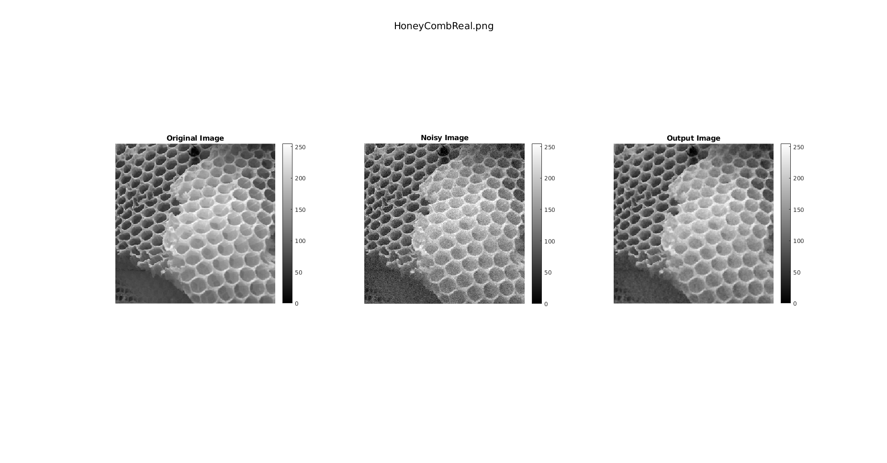
Barbara.png
fig3 = figure('Position',[0,0,5000,5000]); subplot(1,3,1),imshow(img3); title('Original Image'); colorbar; subplot(1,3,2),imshow(noisyimg3); title('Noisy Image'); colorbar; subplot(1,3,3),imshow(output3); title('Output Image'); sgtitle('Barbara.png'); colorbar;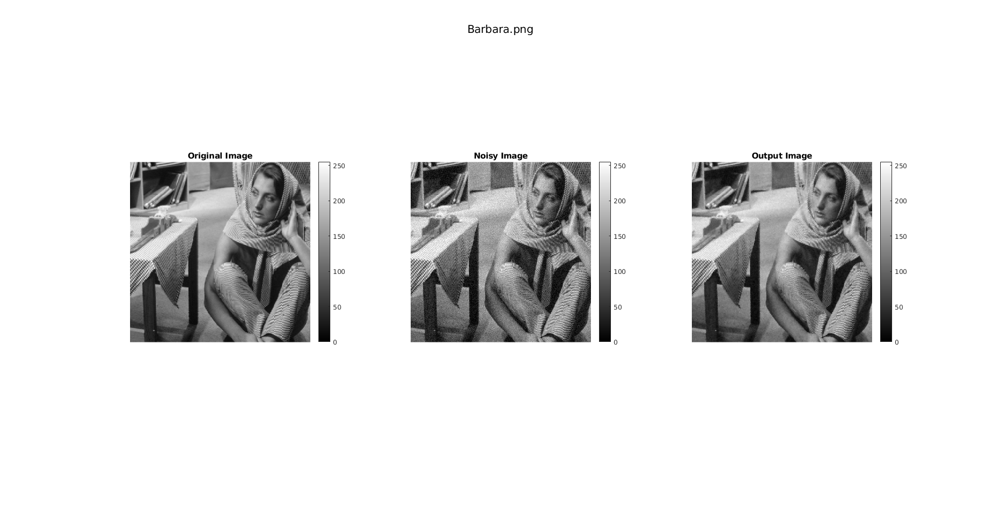
Spatial Gaussian Mask
fig4 = figure('Position',[0,0,5000,5000]); subplot(1,3,1),imshow(spatialimg1); title('Grass.png'); colorbar; subplot(1,3,2),imshow(spatialimg2); title('HoneyCombReal.png'); colorbar; subplot(1,3,3),imshow(spatialimg3); title('Barbara.png'); colorbar; toc;
Elapsed time is 7.896667 seconds.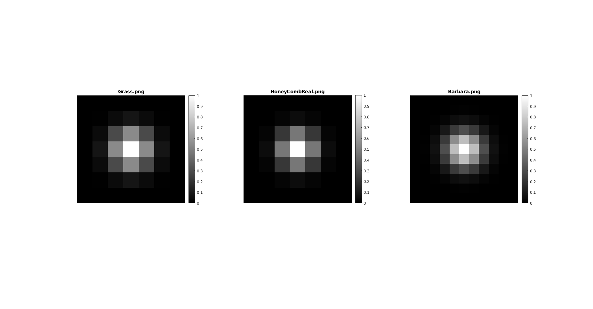